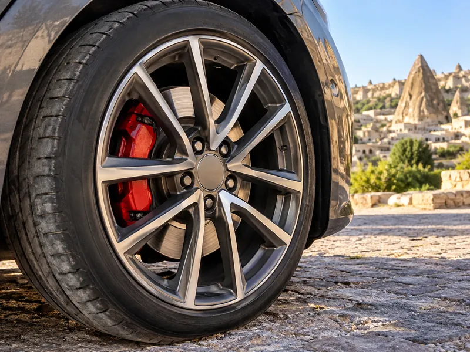

Araç TekniğiKonu 7 / 1036 çıkmış soru
Fren, direksiyon ve süspansiyon
Aracı yavaşlatan, durduran ve sabitleyen fren sistemini (hidrolik fren, balata, el freni, ABS, motor freni), aracı yönlendiren direksiyon sistemini ve rot ayarını, yol sarsıntılarını sönümleyen süspansiyon sistemini anlatır.

1Konu anlatımı
Akılda kalsın
- Fren sisteminin görevi aracın hızını düşürmek ve aracı güvenle durdurmaktır; el freni duran aracı bulunduğu yerde sabitler.
- Hidrolik fren sisteminde sızıntı olursa basınç oluşmaz ve frenler tutmaz; fren hidroliği seviyesi günlük bakımda kontrol edilir.
- ABS frenlemede tekerleklerin kilitlenmesini önler ve direksiyon hâkimiyetini artırır.
- Disk veya kampana yüzeyi bozuksa fren pedalı titrer; fren ayarı bozuksa araç frenlemede bir tarafa savrulur ve kampanalar ısınır.
- Rot başları aşınırsa direksiyon boşluğu artar; rot ayarı bozuksa ön lastikler içten veya dıştan aşınır.
- Seyir hâlinde kontak anahtarı çıkarılırsa direksiyon kilitlenir.
- Süspansiyon sistemi yay ve amortisörlerle yoldan gelen titreşimleri sönümler; amortisör yay salınım süresini kısaltır.
Fren sistemi
Fren sistemi, aracın güvenli bir şekilde yavaşlamasını, durmasını ve durduğu yerde sabit kalmasını sağlar. Görevi aracın hızını düşürmek ve aracı güvenle durdurmaktır; iyi çalışan bir fren durma mesafesini artırmaz, kısaltır.
Hidrolik (ayak) freni ve balatalar
Ayak freninde pedala uygulanan kuvvet, fren hidroliği aracılığıyla tekerleklerdeki fren mekanizmalarına iletilir. Balatalar disk veya kampanaya sürtünerek tekerleği yavaşlatır. Hidrolik sistemde sızıntı olursa basınç oluşmaz ve frenler tutmaz. Bu nedenle fren hidroliği seviyesi günlük bakımda, yola çıkmadan önce kontrol edilir. Balataların aşınmasında yol koşulları (eğimli, trafiği yoğun yollar) ve kullanım süresi etkilidir; fren borularının uzunluğu etkili değildir.
El freni
El freni (park freni), duran aracı güvenli bir şekilde bulunduğu yere sabitlemek için kullanılır; seyir hâlindeki aracı yavaşlatmak ayak freninin işidir. Araç park edildikten sonra el freni çekilir; vitesi boşta bırakmak aracı hareketsiz tutmaz. El freni kolu, tel (halat) aracılığıyla arka frenleri çalıştırır; tel koparsa kol çekilse bile el freni tutmaz. El freni çekili unutulursa araç zorlanarak hareket eder; balatalar ve kampanalar aşırı ısınıp zarar görür, yakıt tüketimi de artar.
Daire içinde ünlem işareti bulunan kırmızı fren ikaz ışığı el freni çekiliyken yanar. El freni indirildiği hâlde sönmüyorsa fren hidroliği azalmış ya da fren sisteminde arıza vardır. ABS ikaz ışığı sürüş sırasında yanık kalırsa ABS'de arıza olabilir; araç en kısa sürede kontrol ettirilmelidir.
ABS
ABS, frenleme sırasında tekerleklerin kilitlenmesini önler. Tekerlekler dönmeye devam ettiği için araç daha az kayar ve sürücü fren yaparken direksiyon hâkimiyetini koruyarak engelden kaçabilir.
Motor (kompresyon) freni
Gaz pedalı bırakıldığında motorun sıkıştırma direnci tekerleklere aktarılır ve taşıt yavaşlar. Uzun inişlerde sürekli ayak freni kullanmak balataları ve fren sistemini aşırı ısıtır; sürtünme azalır ve etkili frenleme yapılamaz. Bunu önlemek için inişlerde vites küçültülerek motor freninden yararlanılır.
| Belirti | Muhtemel neden |
|---|---|
| Frenlemede pedal titriyor | Disk veya kampana yüzeyleri bozuk (eğrilmiş) |
| Frenlemede araç bir tarafa savruluyor | Fren ayarı bozuk; tekerleklerdeki fren kuvvetleri eşit değil |
| Kampanalar aşırı ısınıyor | Fren ayarı bozuk; balatalar kampanaya sürekli sürtünüyor |
| Frenler tutmuyor | Hidrolik sistemde sızıntı ya da balataların aşırı ısınması |
| Araç rahat harekete geçmiyor, zorlanıyor | El freni çekili unutulmuş |
Direksiyon sistemi
Direksiyon sistemi, sürücünün direksiyon simidine verdiği hareketi ön tekerleklere ileterek aracın istenen yöne kolay ve zahmetsiz yönlendirilmesini (sevk edilmesini) sağlar. Simidin dönme hareketi direksiyon mili ile direksiyon dişli kutusuna, oradan rot kolları ve rot başları aracılığıyla tekerleklere iletilir.
- Hidrolik direksiyon: Sıvı basıncı yardımıyla direksiyonu çevirme kuvvetini azaltır ve aracın daha kolay yönlendirilmesini sağlar.
- Rot başları: Direksiyon hareketini tekerleklere ileten mafsallardır; aşındıklarında direksiyon boşluğu artar.
- Rot (ön düzen) ayarı: Tekerleklerin yola doğru açıyla basmasını sağlar. Amacı düzensiz lastik aşıntılarını önlemek ve aracın düzgün istikamet takibini sağlamaktır. Rot ayarı bozuksa ön lastikler içten veya dıştan düzensiz aşınır, araç bir tarafa çekebilir. Rot ayarı genellikle tekerleklerin balans ayarıyla birlikte yaptırılır.
Süspansiyon sistemi
Süspansiyon sistemi, araç gövdesi ile tekerlekler arasına yerleştirilir. Yol yüzeyinin yapısından kaynaklanan titreşimleri, salınımları ve ani şokları sönümleyerek sürüş konforunu ve yol tutuşunu iyileştirir. Başlıca elemanları yaylar (helezon yay, makas) ve amortisörlerdir. Yay darbeyi karşılar; amortisör ise yayın salınımını sönümleyerek salınım süresini kısaltır, böylece tekerlek yolla temasını korur ve araç sallanmaz.
2Bu konunun soruları
MEB sınavlarında bu konudan çıkmış 36 soru (6 tanesi en az üç sınavda soruldu). Her soruda doğru cevabı ve açıklamasını hemen görürsünüz.
Hangi sorular?
Sıralama